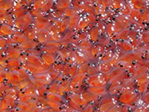
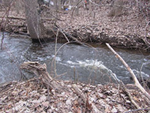
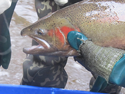

Promo Image

Thames River Anglers Association
PromoText
In the spring of 1986 the TRAA was formed by anglers concerned with the state of the fishery in the Thames River watershed, particularly the dwindling smallmouth bass population in the North Thames River.The TRAA is not a fishing club, although most members are anglers and share fishing as a common interest. We are a "hands on" environmental group who likes to work at a grass roots level.
Trout Hatchery
Watershed
WATERSHED
Watershed to: protect, enhance and regenerate a viable, multi-species, year-round fishery participate in environmental rehabilitation.
Steelhead
STEELHEAD
Freshwater forms that have been introduced into the Great Lakes and migrate into tributaries to spawn are also called steelhead.Watershed
Adult Fish
ADULT FISH
Adult fish are distinguished by a broad reddish stripe along the lateral line, from gills to the tail, which is most vivid in breeding males.